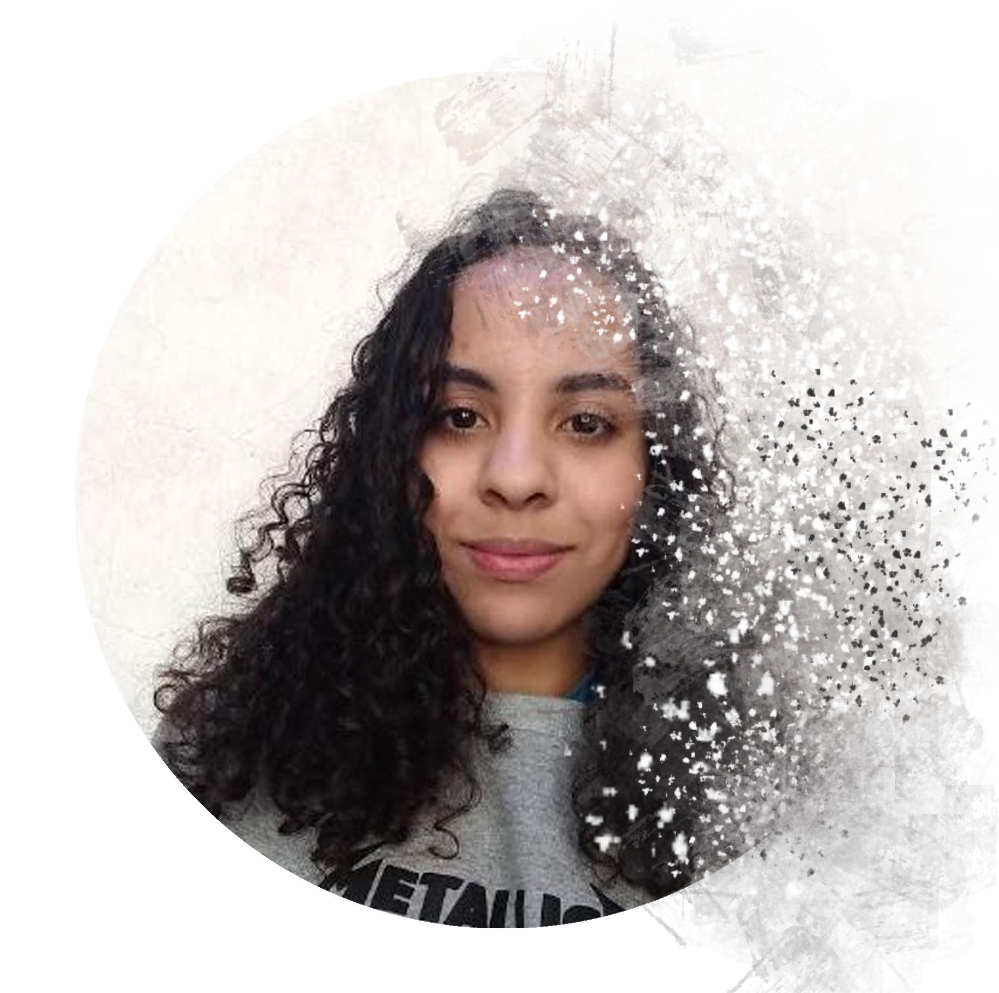

Sobre
O site
Com o visual moderno e agradável, a Space Comic foi pensada para a melhoria ao acesso as HQ's, tendo em vista a dificuldade de encontrar as mesmas. Trazendo assim a vasta lista da Marvel para o consumo gratuito.
Quem somos ?
Com o começo em 2020, somos os integrantes do GRUPO 1 do Projeto Front-End Coding Facebook, uma parceria entre a Digital House Brasil e o Facebook. Essa parceria tem como objetivo em desenvolver e aprimorar a formação de novas pessoas para o mercado de tecnologia no país.

Grupo 1
Matheus Vasconcelos
"Matheus Vasconcelos é estudante de Ciência da computação na universidade Anhembi Morumbi. Com fortes conhecimentos em linguagens de programação com ênfase em Python aplicado ao Data Science e Machine Learning. Busca o aprendizado no desenvolvimento web com o intuito de aprimorar o conhecimento e descobrir novos ambientes de aplicação para ciências tecnologicas."
Caio Cesar

"Caio Cesar é novo na área da programação, porém com conhecimentos avançados em manutenção de computadores, sendo da área de informática por dois anos no Exército Brasileiro."
Aline Pereira
"Aline Pereira, formada no curso técnico de desenvolvimento de sistemas em 2016, cursou 1 semestre e meio de enfermagem, mas se reencontrou na programação em 2020. Possuí conhecimento nas tecnologias front-end HTML, CSS, JavaScript, SASS e na plataforma VTEX. Em busca sempre de novos conhecimentos e ficar por dentro das tecnologias que estão em alta no mercado."

Um pouco de história

Fundada no começo da década de 1930 por Martin Goodman, a Marvel Comics foi originalmente chamada de Timely Comics. Seu fundador era editor de revistas que faziam sucesso com histórias de faroeste. Visionário, Martin Goodman expandiu seu trabalho no sentido de um mercado muito promissor. Com a sede estabelecida em Nova York, Goodman detinha o poder na editora, acumulando diversos cargos. A primeira publicação só aconteceria em 1939 através de uma revista chamada Marvel Comics que mostrou pela primeira vez ao público os personagens Tocha Humana e Namor. A publicação foi um sucesso de vendas e estimulou a equipe responsável a lançar a segunda edição no ano seguinte, mas com o nome de Marvel Mystery Comics.
Na década de 1940, Jack Kirby e Joe Simon formaram a dupla da ainda Timely Comics que daria origem ao primeiro herói patriota, o Capitão América. Sua primeira aparição foi em março de 1941 e fez circular quase um milhão de exemplares. O patriotismo sempre foi um elemento muito forte na cultura estadunidense e o momento de guerra vivido no mundo favoreceu à editora que soube atingir o ponto fundamental para tornar as histórias em quadrinho uma febre nos Estados Unidos.
Todavia, da mesma forma como a guerra favoreceu às vendas sobre histórias de heróis, o fim do conflito fez cair significativamente esse tipo de roteiro. Para manter-se ativa, a Timely Comics expandiu-se pelos mais diversos gêneros. Os anos 1950 foram complicados para a Timely Comics e as outras editoras do ramo. Martin Goodman passou a publicar com o nome de Atlas e tentou ressuscitar alguns heróis da década de 1940, mas não obteve sucesso. Foi graças ao sucesso que a DC Comics obteve com suas histórias de super-heróis no final da década de 1950 e início da década de 1960 que a Marvel Comics se recuperou no gênero. Nesta época, Jack Kirby e Stan Lee foram responsáveis pela criação do Quarteto Fantástico. O sucesso foi tão grande que estimulou a criação de outros heróis na mesma década, com destaque para o Homem-Aranha, de Stan Lee e Steve Ditko.
A Marvel Comics tornou-se diferenciada no mercada de editoras de histórias em quadrinhos por apresentar histórias mais próximas da realidade, seus personagens eram muito originais, diferenciados e bem trabalhados. Stan Lee foi um dos roteiristas que mais se destacou na história da Marvel Comics, o que lhe rendeu o posto de diretor da empresa por longos anos.
A Marvel Comics entrou na década de 1970 com mais um período de baixa no mercado, mas se recuperou ao final dela. Nos anos 1980 houve novo renascimento criativo que aumentou a venda dos gibis. A empresa passou a investir em diferentes mídias quando comprou o estúdio de animação de Friz Freleng, responsável pela Pantera Cor de Rosa, e gerou desenhos animados de sucesso como G.I. Joe, Transformers e Muppet Babies.
Após muitas décadas e a grande crise dos anos 1990, a Marvel Comics firmou-se como a principal editora de histórias em quadrinho dos Estados Unidos. Atualmente, a principal concorrente é a D.C. Comics, mas esta está muito abaixo da Marvel em número de vendas. A Marvel Comics gerou um mito da cultura popular, Stan Lee. Ele não está mais ligado oficialmente à empresa, mas, recorrentemente, assina algumas edições especiais. No século XXI, a Marvel Comics criou também uma linha editorial para adolescentes mais velhos, a Marvel Knights, e uma para adultos, a MAX. A empresa cresceu substancialmente com a parceria estabelecida com Holywood. Até que, em 2009, a Marvel Entertainment foi comprada pela Walt Disney Company por quatro bilhões de dólares. O catálogo da Marvel possui cerca de cinco mil personagens, sendo que entre os mais famosos estão, Hulk, Homem-Aranha, Capitão América, O Justiceiro, Demolidor, Thor, Homem de Ferro, Blade, Motoqueiro Fantasma, o Quarteto Fantástico e os X-Men.